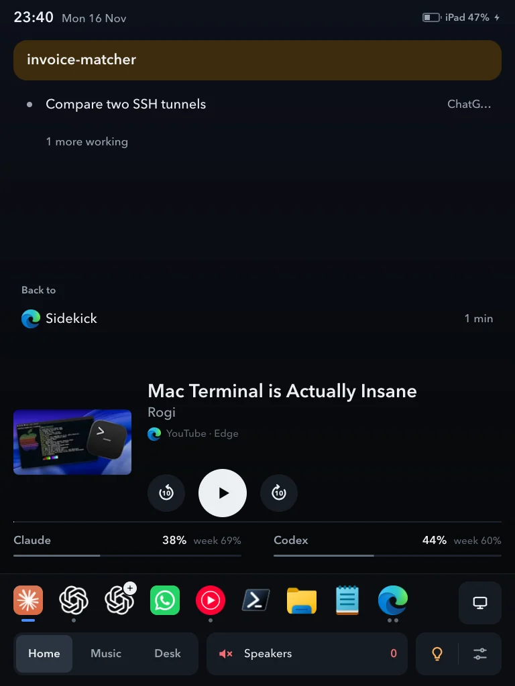
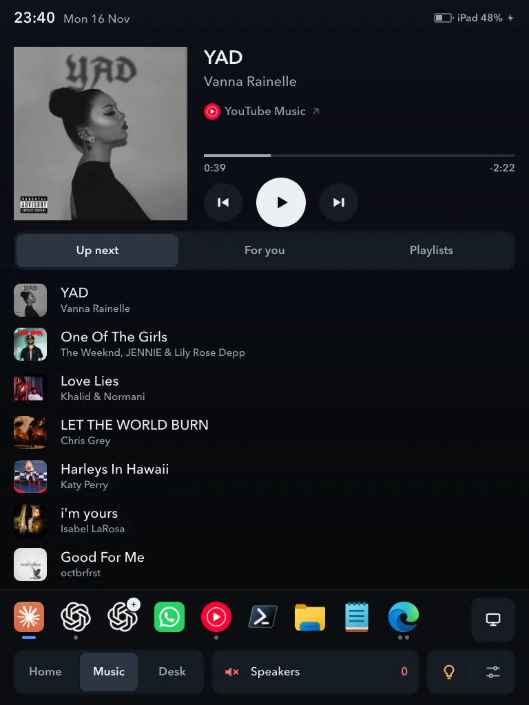
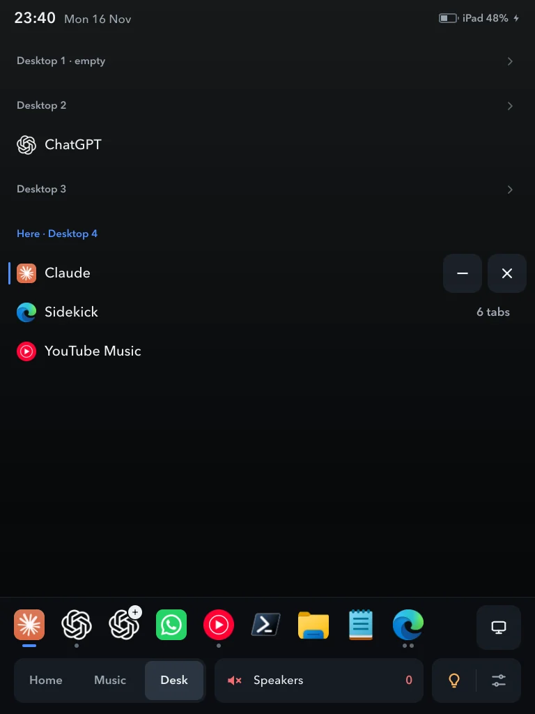
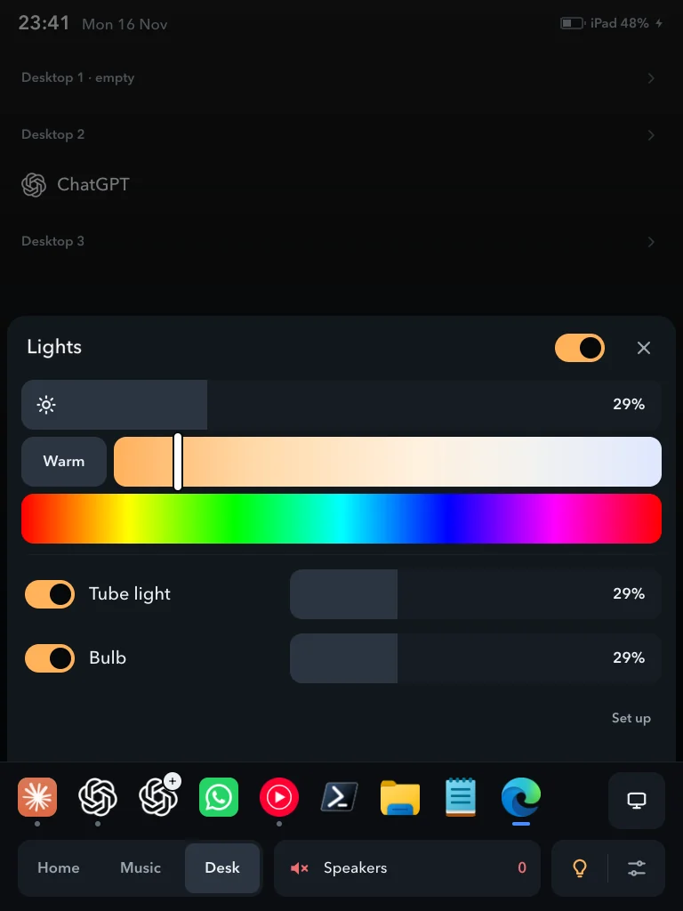

Sidekick
A 2012 iPad mini, turned into a calm control surface for one Windows desk. It stands beside the keyboard and takes the small, constant interruptions off the main screen: which AI coding session needs an answer, what is playing, which window you were in, the room's lights. One touch each, without leaving what you are doing.

Home What wants you, and what is playing. 
Music YouTube Music's own queue, picks and playlists. 
Desk Every window, grouped by desktop. 
Lights Off means off: only a switch turns lights on. 
Rest A clock that says whether you can stay away.


Real screenshots from the device. The jobs and the chat on Home are made-up test data; rows with private window titles were removed.
Built for old hardware
An A5 CPU, 512 MB and iOS 8's WebKit: no CSS variables, no grid, no modern JavaScript. The page is plain ES5 inside a small Objective-C shell, and it measures its own layout on the device.
No stale actions
Every touch names the window, tab or track it was drawn for, by ids the PC issued. The PC checks again and refuses if anything changed. Nothing moves under a finger.
Local only
The C# agent listens on 127.0.0.1 and rejects web pages by Host, Origin and fetch site. The iPad reaches it through an SSH tunnel with a pinned host key.
Tested without disturbing the desk
263 automated checks: 210 for the agent's decisions, 36 headless page sequences against a simulated PC, 17 for the gate that keeps GUI tests off a PC in use.
Motion that survived the A5
Every planned animation was measured on the iPad (target: 90 % of frames within 20 ms, none over 50 ms). Most were cut, not tuned.
| Motion | On the A5 | Ships |
|---|---|---|
| Panel fades in | 100 % of frames within 20 ms | yes |
| New row fades in place | 90 %, longest 34–37 ms | yes |
| Destination slide | 70–92 %, long frames | cut |
| Panel closing fade | one 50–60 ms frame | cut |
| Song art crossfade | passed alone, not with the rest | cut |
Built with AI coding agents, mainly Claude Code. I decided what it should do, used each version on the iPad every day and judged what had to change; the agents wrote, tested and reviewed the code.
College projects
-
02
SAR flood mapping
U-Net with a ResNet-34 encoder, segmenting flood water in Sentinel-1 radar, which sees through cloud.
0.66 validation IoU
-
03
Hindi named entity recognition
Multilingual BERT fine-tuned on WikiAnn to tag people, organisations and places.
0.91 test F1
-
04
Speech emotion recognition
A 1-D CNN over audio features on RAVDESS. The split shares augmented copies of clips, so the score is optimistic.
58 % over 7 emotions